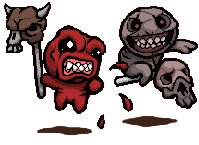
wiki
ADMINS
STEAM
NEWS
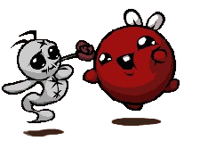
REBIRTH
BUNDLE
 Achievements
Achievements
 Challenges
Challenges
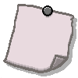
Completion Marks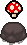
Items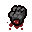
Trinkets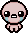
Characters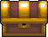
Chapters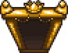
Rooms Transformations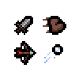
Atrributes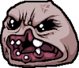
Bosses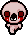
Monsters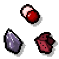
Pickups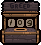
Modes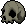
Objects Effects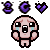
Curses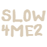
Seeds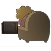
Endings Music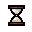
Version History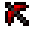
ModdingAbout The Game
The Binding Of Isaac: Rebirth is a randomly generated action RPG shooter with heavy roguelike elements Players will accompany Isaac on a quest to escape his mother , facing off against droves of mysterious creatures, discovering secrets, and fighting fearsome bosses . Along the way, Isaac can find bizarre treasures that change his form and give him super-human abilities. But it won't be easy!
Rebirth is the remake of the original game that sports a game engine that runs at 60 FPS, pixelated style artwork, polished visual effects, and a new soundtrack from Ridiculon. Oh yeah, hundreds of new rooms, synergies, and returned enhancements by series creator, Edmund McMillen and other developers. There are three DLCs available for Rebirth, The Binding Of Isaac: Afterbirth, The Binding Of Isaac: Afterbirth †and The Binding Of Isaac: Repentance. Did we mention the poop?